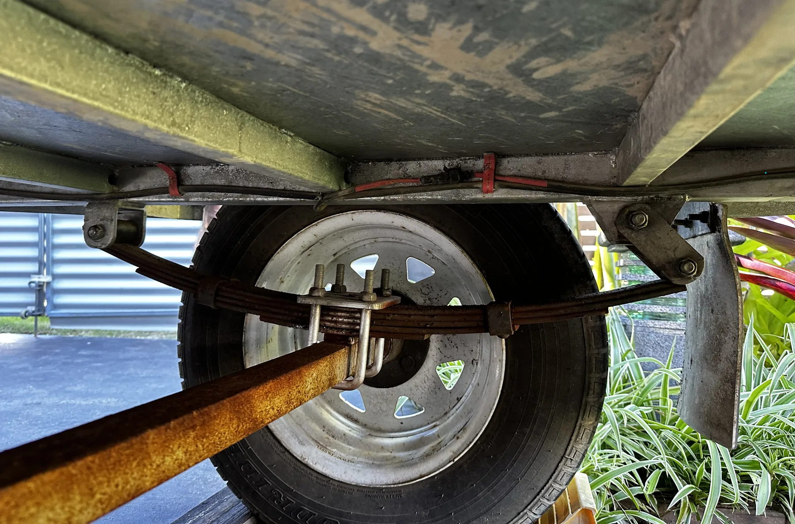
Weld Fatigue Design Audit
Overview
A complete fatigue design audit of the fillet-welded leaf spring rear hanger bracket on a 750 kg ATM single-axle box trailer. The analysis proceeds through functional load path identification, weld group stress calculation across five loading conditions, Modified Goodman infinite-life verification, and ANSYS FEA validation with a full mesh convergence and boundary condition sensitivity study. Both methods confirm infinite fatigue life; their discrepancy is quantified and explained through three identified stress contributors.
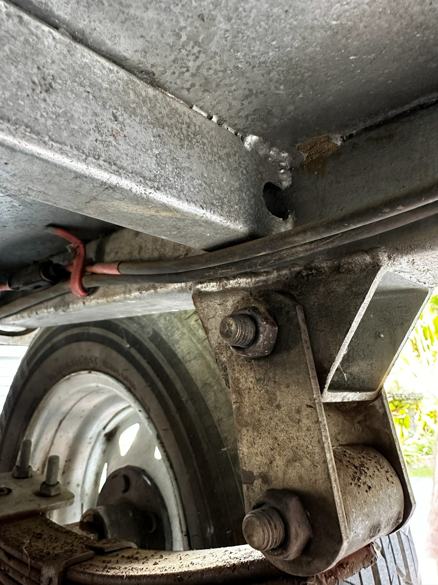
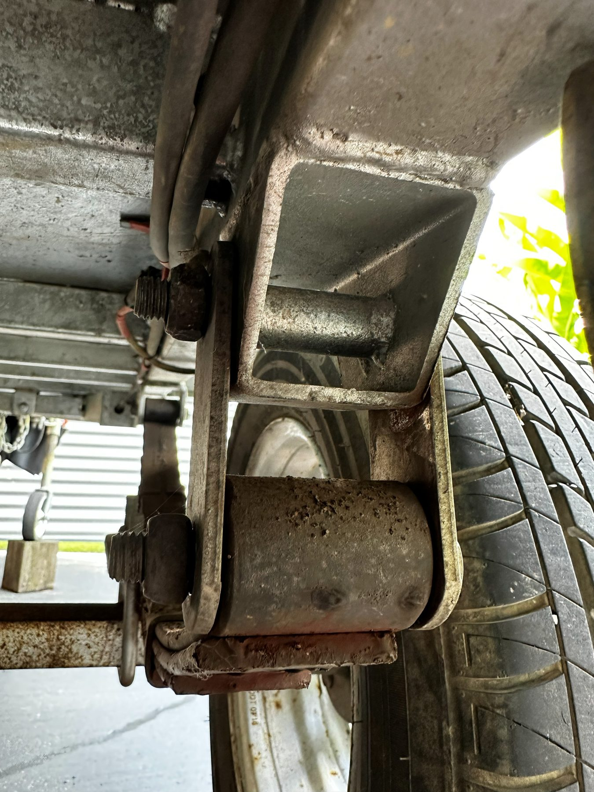
Functional analysis
The box trailer uses a conventional single-axle leaf spring system with U-bolts constraining the leaves. The rear shackle connects the spring eye to the hanger bracket via a 70mm rigid link, with a pin-to-weld-centroid distance of 100mm. This 100mm lever arm is the critical force multiplier generating bending moments on the weld group.
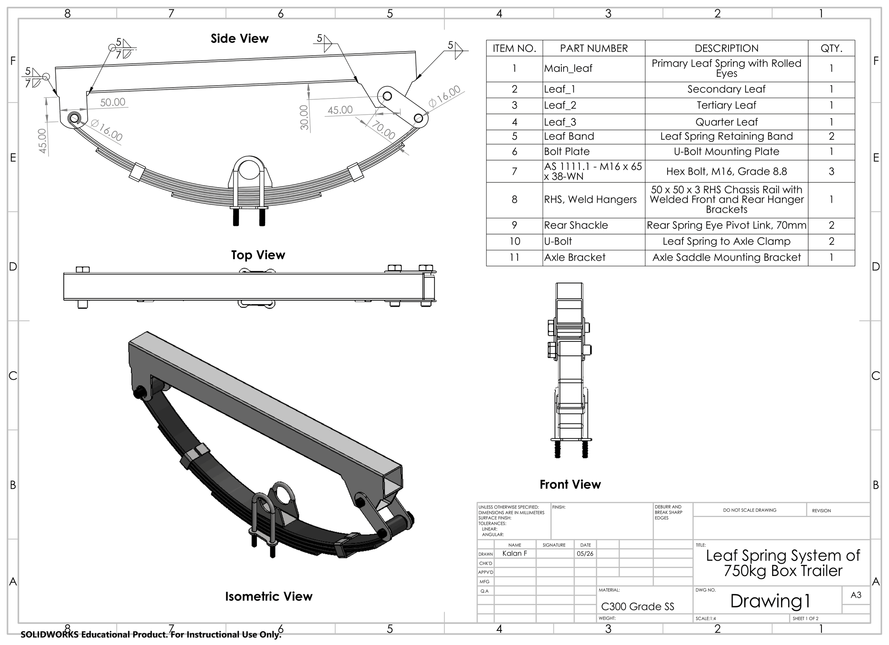
A comparative lever arm analysis was performed to identify the critical hanger. The front hanger is fixed directly to the chassis rail with a lever arm of approximately 30mm. During braking, the front hanger absorbs 100% of longitudinal forces; the rear shackle swings freely and cannot transmit them. However, the rear hanger's 100mm lever arm multiplies dynamic thrust from leaf spring compression into bending moments more than 3x higher than the front hanger under equivalent loading. The rear hanger is therefore the governing fatigue case.
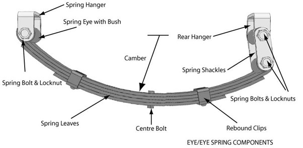
The spring compression geometry was also analysed. The leaf spring arc length of 800mm vs chord length of 690mm means full flattening would require 110mm of horizontal displacement. The rear shackle can only accommodate 70mm, so full flattening is geometrically impossible. This confirms that further spring compression progressively stiffens the shackle, making bending moment transfer to the weld group unavoidable. Conservative shackle angles of 15 degrees for the 2g dynamic case and 20 degrees for the 3g pothole (17 mm and 22 mm of shackle displacement) were applied to derive horizontal force components for each load case.
Load cases
Five loading conditions were defined using F = ma with dynamic load factors of 2g for road loading (high-cycle, more than 106 cycles) and 3g for a pothole (low-cycle yield check, about 103 cycles), following the dynamic and fatigue loading framework of AS 3990 and AS 4100 and standard vehicle-dynamics practice. The full 750 kg ATM is divided equally across four hanger brackets, giving a static force of 1840 N per bracket. The usual 10% tow-ball deduction was deliberately left out as a conservative worst case.
| Case | Event | Fy (N) | Fx (N) | M (Nm) | Description |
|---|---|---|---|---|---|
| 1 | Static (1g) | 1840 | 0 | 0 | Trailer at ATM, stationary. Shackle vertical. |
| 2 | Dynamic (2g) | 3680 | 986 | 98.6 | Standard road loading at 15 deg. Primary high-cycle fatigue event. |
| 3 | Pothole (3g) | 5520 | 2009 | 200.9 | Severe impact at 20 deg. Low-cycle yield check. |
| 4 | Cornering (0.3g) | 1840 | 552 lateral | 55.2 | Lateral cornering; torsional twist on weld group. |
| 5 | Braking | excluded | excluded | 0 | Rear shackle swings freely; front hanger absorbs 100% of longitudinal forces. |
Weld geometry and assumptions
The weld group is a four-face rectangular fillet weld: 100x50mm bracket, 5mm leg length, 4.3mm throat (accounting for the curved weld face rather than using the standard 0.707h), total perimeter 300mm. Weld properties (throat area A, second moment of area Iu, and polar moment Ju) were derived from first principles for the rectangular geometry.
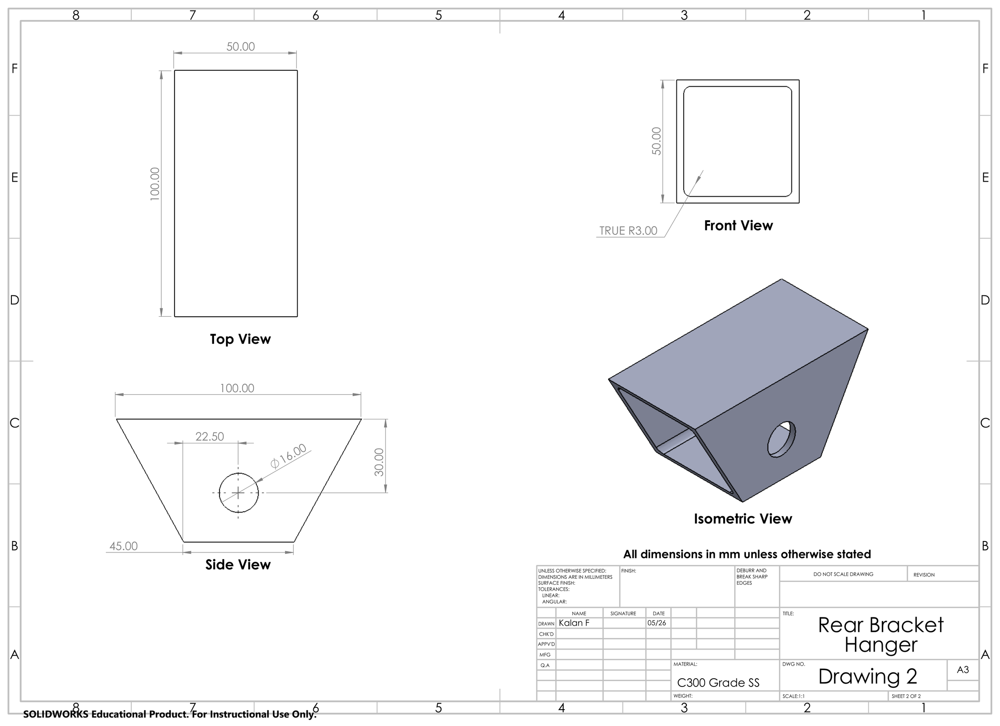
Material is Grade C300 structural steel (Sut = 430 MPa, Sy = 300 MPa), selected to represent realistic conservatism for a mass-produced trailer rather than inflating the factor of safety with high-tensile steel. Fatigue stress concentration factor Kf = 2.7 was applied as a conservative value for the end of a parallel fillet weld, taken from the approximate fatigue stress concentration factors in Fundamentals of Machine Component Design (Table 11.2). The chassis rail was treated as a perfectly rigid support in hand calculations; this known simplification is quantified in the ANSYS comparison.
Hand calculation results
Von Mises equivalent stress was calculated for all five load cases. The fatigue cycle is defined between the empty parked condition at the 260 kg tare mass (σmin = 2.81 MPa) and the 2g dynamic road loading (σmax = 20.74 MPa), representing the primary high-cycle event experienced over the trailer's service life. The modified endurance limit Sn = 68.64 MPa was established from Sn′ = 0.5 Sut = 215 MPa with combined modification factors of 1 × 0.8 × 0.53 × 1 × 0.753 = 0.32, including the as-welded surface condition.
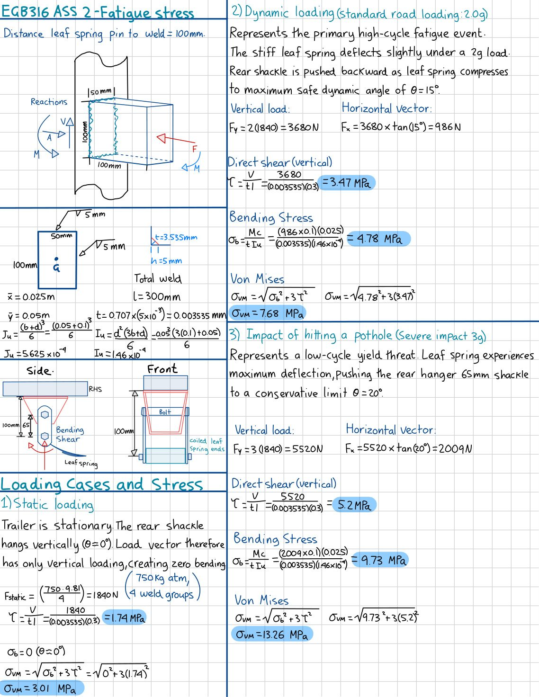
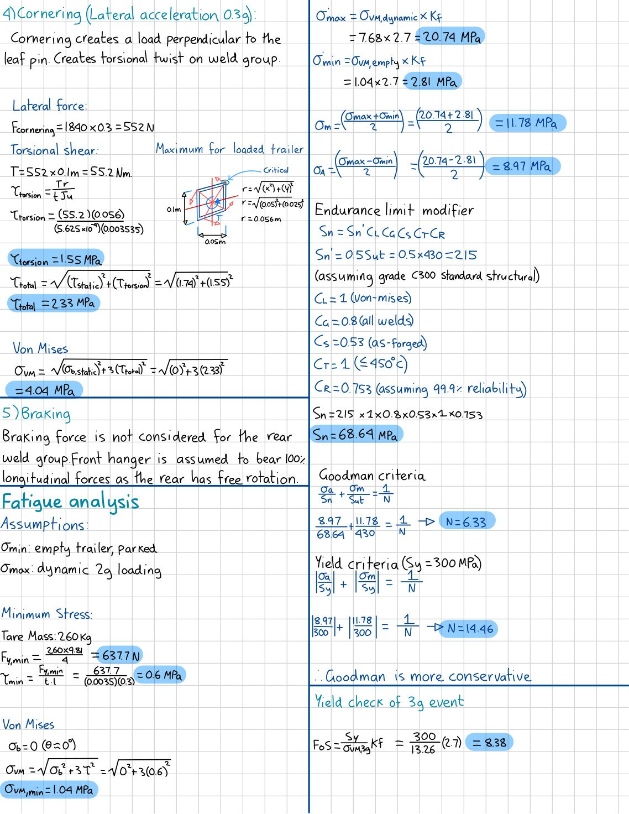
| Parameter | Value | Note |
|---|---|---|
| Static von Mises (Case 1) | 3.01 MPa | 1g, no bending moment |
| Dynamic von Mises (Case 2) | 7.68 MPa | 2g, 15 deg shackle |
| Pothole von Mises (Case 3) | 13.26 MPa | 3g, 20 deg shackle |
| σmin (Kf applied) | 2.81 MPa | Empty, parked condition |
| σmax (Kf applied, Case 2) | 20.74 MPa | Primary fatigue cycle maximum |
| σmean | 11.78 MPa | Operational 1g to 2g cycle |
| σalternating | 8.97 MPa | Operational 1g to 2g cycle |
| Modified endurance limit Sn | 68.64 MPa | As-welded, Marin factors applied |
| Goodman FoS (fatigue) | 6.33 | Infinite life |
| Yield FoS (static) | 14.46 | Pass |
| Yield FoS (3g pothole) | 8.38 | Pass |
The existing 5mm fillet weld substantially exceeds the minimum required for infinite life. Back calculation for a Goodman FoS of 2 yields a minimum fillet leg of approximately 2mm, compared to the current 5mm: the existing weld is approximately 2.5x over-specified. This is consistent with mass-produced trailer manufacturing, where welders apply a uniform pass size rather than optimising for the minimum material on safety-critical connections.
ANSYS FEA validation
The ANSYS model comprises 300mm of 50x50x3mm hollow RHS chassis rail with a 100x50mm rectangular bracket block. Fillet welds were modelled on the two short ends with curved weld face geometry, increasing the effective throat from 3.54mm (flat assumption) to 4.3mm. Bonded contacts were placed between all mating bodies. The 2g dynamic load case (Fy = 3680 N, Fx = 986 N at 15 degrees) was applied as resolved components at the bracket face. C300 steel properties were assigned throughout.
Mesh convergence
A face sizing was swept across the fixed-radius blend at the critical weld toe while the rest of the model held a 5 mm global tetrahedral mesh. Peak von Mises stress stays inside a 41.2 to 42.4 MPa band across an order-of-magnitude refinement. The small fluctuation reflects the discrete element edges resolving the concentration rather than a drifting solution. The result is mesh-independent; the final 0.1 mm toe mesh resolves roughly 13 elements across the concentration width.
| Weld-toe element size | Peak σVM | Note |
|---|---|---|
| 1.0 mm | 42.0 MPa | Coarse toe mesh. |
| 0.5 mm | 41.2 MPa | |
| 0.3 mm | 42.4 MPa | |
| 0.2 mm | 41.4 MPa | |
| 0.1 mm | 41.5 MPa | Final mesh: 13 elements span the concentration width. |
Parameter sensitivity study
Beyond mesh density, a five-stage parametric study isolated each source of stress concentration and took the model from an unphysical singularity to a physically representative result. Stage 3 sweeps the weld-toe blend radius; stages 4 and 5 add the real convex weld profile and the flexible rear wall.
| Stage | Configuration | Peak σVM | Observation |
|---|---|---|---|
| 1 | Pure compression (axial only) | 27 MPa | Bending omitted before the force was resolved into its horizontal component. |
| 2 | Corrected force (Fy + Fx resolved) | 219 MPa | Geometric singularity at the sharp weld toe; unconverged. |
| 3a | Flat fillet, 0.10 mm blend radius | 160 MPa | Baseline for the blend-radius sensitivity sweep. |
| 3b | Flat fillet, 0.15 mm blend radius | 141 MPa | 12% reduction; clear sensitivity to toe sharpness. |
| 3c | Flat fillet, 0.20 mm blend radius | 130 MPa | 19% reduction; trend establishing. |
| 3d | Flat fillet, 0.25 mm blend radius | 121 MPa | 24% reduction; rate of decrease slowing. |
| 3e | Flat fillet, 0.30 mm blend radius | 115 MPa | 28% reduction from baseline. |
| 4 | Convex face, 4.3 mm throat, 1 mm blend radius | 70 MPa | Realistic as-welded profile; 56% below the sharp baseline. |
| 5 | Frictionless rear-wall support (final model) | 42 MPa | Physically representative; constraining the 3 mm wall removes 28 MPa (40%). |
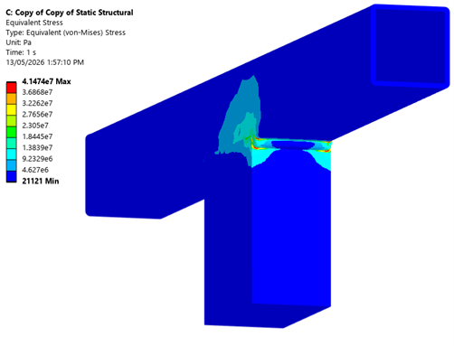
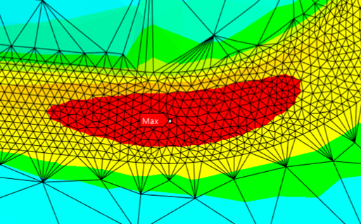
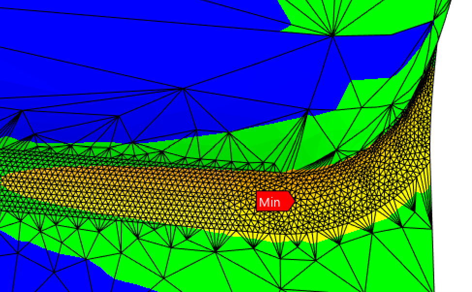
Three contributors to the hand calc / FEA discrepancy
The hand calculation returns a Goodman FoS of 6.33; ANSYS returns 2.86. Both predict infinite fatigue life. Reading the two methods side by side as an effective stress multiplier on the 7.68 MPa nominal stress shows exactly where they diverge, and the 2.2× ratio between them is expected and fully explained by the three contributors below.
| Quantity | Hand calc | ANSYS, free wall | ANSYS, constrained wall |
|---|---|---|---|
| Nominal von Mises (2g dynamic) | 7.68 MPa | n/a | n/a |
| Peak von Mises | 20.74 MPa | 70 MPa | 42 MPa |
| Effective stress multiplier | 2.7× applied Kf | 9.1× | 5.4× |
| Goodman fatigue FoS | 6.33 | n/a | 2.86 |
| Predicted life | Infinite | n/a | Infinite |
The constrained-wall model (5.4×) is the closest numerical analogue to the hand calculation's rigid-support assumption: its 42 MPa against the hand calc's 20.74 MPa is the like-for-like comparison, while the free-wall 9.1× shows how much real geometry and wall flexibility the uniform Kf = 2.7 cannot capture.
The weld toe blend radius controls local stress amplification. Reducing the modelled radius from 1.0mm to 0.10mm increased peak stress from 70 MPa to 160 MPa, a 2.3x increase. Real weld toe radii are never perfectly sharp; the 1mm radius represents a realistic as-welded condition. Hand calculations apply Kf = 2.7 uniformly, which cannot capture this geometric sensitivity.
The frictionless rear wall support reduced peak stress from 70 MPa to 42 MPa, a 40% reduction. The 3mm RHS wall flexes locally under bracket loading; the hand calculation assumes a perfectly rigid support and cannot quantify this deformation. The constrained wall result of 42 MPa is the closest ANSYS analogue to the hand calculation's rigid assumption.
The hand calculation distributes stress uniformly across the 300mm weld perimeter. ANSYS consistently shows peak stress at the weld toe corners where geometry transitions occur. This non-uniform distribution is physically realistic and cannot be captured by a Kf multiplier applied to an averaged stress value.
Assumptions and ethics
The analysis is theoretical, so each assumption carries a responsibility under the Engineers Australia Code of Ethics. I kept them conservative and stated where the uncertainty sits.
- Competence
- C300 properties are assumed, not tested. If the real steel is weaker, every factor of safety on this page moves with it.
- Public safety
- The 2g and 3g load factors are evidence-based estimates, not measurements from this trailer. The trailer runs on public roads, so an underestimate puts other road users at risk, not just the owner.
- Service life
- The equal ATM/4 split could be refined with the measured axle position. Corrosion and weld defects reduce the effective throat over time.
- Material use
- A weld 2.5 times larger than it needs to be costs extra filler metal and energy on every trailer built. The steel itself is recyclable at end of life.
Conclusion
Both analytical methods converge on the same conclusion: the existing 5mm fillet weld achieves infinite fatigue life with substantial margin. The hand calculation is conservative in fatigue prediction; ANSYS is conservative in stress prediction. The weld has been in service for eight years since manufacture with no visible defects or cracking at the weld toe, which is directly consistent with both methods predicting infinite life.
If the trailer were being designed from scratch, the free-wall ANSYS result of 70 MPa would be the more trustworthy design stress. It is comparable to the modified endurance limit of 68.64 MPa, so the real Kf should be confirmed against a measured weld profile before the margin is relied on.
Recommendations for improved analysis include direct material testing to confirm C300 steel properties, further investigation of leaf spring kinematics to refine load quantification, and physical measurement of the real weld toe radius to validate ANSYS geometric assumptions.